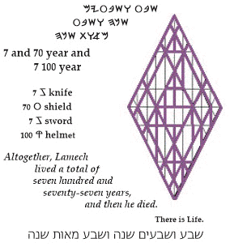

Lamech Dies
Awakened c souls b understand
o that they serve as a bellows w for the Breath of Life c. Comfortable b with this awareness o, they long to serve y without restriction m, hoping to purge
c the inside of the cup n. Their
lives h are
sacrificed w unto the indwelling Breath c, as unto a soul mate b; for they treasure o the counsel m of the Father a and entrust w all things t to his Wisdom c. The Sons of Man n are truly alive h.
Gematria 2056 wnaa :
The Father a will quicken a the dead n in his mercy w.
Numerology
274 dor >
247
zmr
> 94 dx
> 76
wo
>
67
zs
>
49
fm
>
31
al
>
13 gy
> 4
d:
Watch r in silence o. Pay attention d to Messiah's r counsel m. It saves z by transforming x perceptions d and understandings o. Alignment and unification w with the Tree of Life s opens the floodgates z
for Living Waters m to sweep away all obstacles f. HaShem protects
l the faithful remnant a. By his hand y, HaShem will convey g the remnant to a refuge, a place of safety d.
|
site |
TrueType Font |
book |